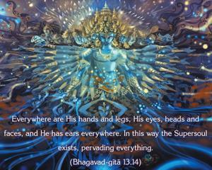
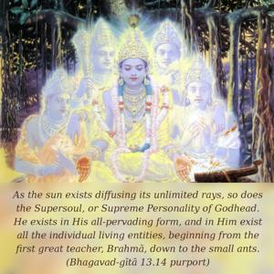
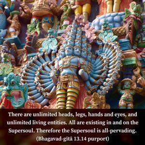
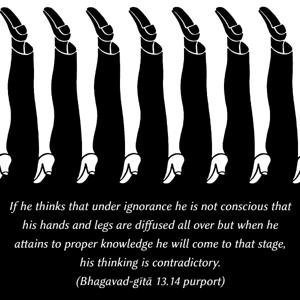

Everywhere are His hands and legs, His eyes, heads and faces, and He has ears everywhere. In this way the Supersoul exists, pervading everything.




As the sun exists diffusing its unlimited rays, so does the Supersoul, or Supreme Personality of Godhead. He exists in His all-pervading form, and in Him exist all the individual living entities, beginning from the first great teacher, Brahmā, down to the small ants. There are unlimited heads, legs, hands and eyes, and unlimited living entities. All are existing in and on the Supersoul. Therefore the Supersoul is all-pervading. The individual soul, however, cannot say that he has his hands, legs and eyes everywhere. That is not possible. If he thinks that under ignorance he is not conscious that his hands and legs are diffused all over but when he attains to proper knowledge he will come to that stage, his thinking is contradictory. This means that the individual soul, having become conditioned by material nature, is not supreme. The Supreme is different from the individual soul. The Supreme Lord can extend His hand without limit; the individual soul cannot. In Bhagavad-gītā the Lord says that if anyone offers Him a flower, or a fruit, or a little water, He accepts it. If the Lord is a far distance away, how can He accept things? This is the omnipotence of the Lord: even though He is situated in His own abode, far, far away from earth, He can extend His hand to accept what anyone offers. That is His potency. In the Brahma-saṁhitā (5.37) it is stated, goloka eva nivasaty akhilātma-bhūtaḥ: although He is always engaged in pastimes in His transcendental planet, He is all-pervading. The individual soul cannot claim that he is all-pervading. Therefore this verse describes the Supreme Soul, the Personality of Godhead, not the individual soul.